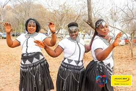

DRESS
Attires worn by locals in francistown is perculiar to the northern region in which some are worn for perfomances or rituals like rainmaking,ancestral thanksgiving as well as healing rituals.
Attires worn by locals in francistown is perculiar to the northern region in which some are worn for perfomances or rituals like rainmaking,ancestral thanksgiving as well as healing rituals.
Francistown has a wide variety of Shopping Centres which cater for the needs and wants of all in the City and beyond
Examples include:
Galo Centre
Nzano Centre
Nswazwi Mall
Tati River Mall
Sunshine Plaza
There is plenty of exclusive and executive accomodation all around the city to suit the comfort of all who visit
Examples include:
Adansonia Hotel
Cresta Marang Gardens
Cresta Thapama Hotel
Sedibeng Hotel
Francistown prides itself with a unique food taste and an assortment of edible setswana cuisine
Examples include:
Phane(Mophane worms)
Delele
Lebele-bele
Morogo wa dinawa